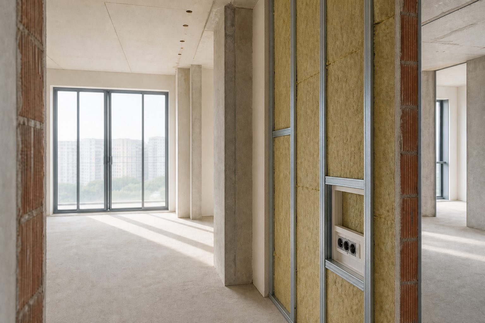

Когда подключать акустика при ремонте
Демонтаж, черновая, электрика, чистовая — привычный порядок. Звукоизоляцию в конец этого списка не воткнуть. Она входит в черновую: каркасы, проходки, периметр пола. Вспомнили после ГКЛ — либо дорогая переделка, либо дыры, которые уже не закрыть без демонтажа.

Лучший момент — когда видны «кости»
Акустический проект ставят на стадию планировки или сразу после демонтажа. Видны перекрытия, перегородки, шахты, примыкания. Можно заложить каркасы, правильные проходки для труб и кабелей, узлы — до гипсокартона и чистовых полов. Ещё можно перенести розетку с общей стены, заложить демпферную ленту по периметру, спроектировать потолок с нужным зазором 50–100 мм.
Сначала конструкция, потом цвет стен. Звукоизоляция — не краска поверх готовой стены, а то, из чего стена и потолок собраны. «Добавим вату потом» у подрядчика часто значит один слой без узлов. На объекте такое почти не держит результат.
Как этапы стыкуются
На планировке согласуют зоны: спальня, кинотеатр, общая стена с соседом. От этого — какие ограждения усиливать первыми. На черновой монтируют каркасы, слои, мембраны, герметизируют проходки — до облицовки. Электрика идёт параллельно. Розетки на общих стенах — типичные дыры: планируют до шумоизоляции, не после.
Чистовая — конструкция закрыта, менять без демонтажа нельзя. Отдали электрику «как обычно», акустику подключили, когда ГКЛ уже на стене — классика. Слабые места — в статье про акустические мостики и щели.
Ситуация
Подрядчик смонтировал один слой гипсокартона на стену к соседу. Заказчик вспомнил про звукоизоляцию на следующий день.
Что проверяет ЦИА
Частичный демонтаж или компромисс — дороже и слабее, чем проект до монтажа. Иногда выгоднее остановить бригаду сейчас.
Что передать на старте
План квартиры или дома, тип здания (панель, монолит, кирпич), описание проблемы своими словами, фото голых конструкций — если демонтаж уже был. Ремонт только планируется — часто хватает дистанционной оценки. Перед черновой — замер и проект, чтобы бригада получила узлы до монтажа. Разница форматов — замер vs проект.
Если ремонт уже сделан
Обследование возможно, выбор решений узкий. Незаметно удвоить перегородку при мебели и чистовой — нет. Для квартиры иногда остаётся локальное усиление: потолок снизу при ударном шуме сверху, перегородка в одной комнате, герметизация доступных щелей. Инженер скажет прямо, что реально, а что только через полный демонтаж.
Согласование с дизайнером
Звукоизоляция добавляет толщину стен и потолков — часто +50–100 мм на сторону, иногда больше. Занимает ниши, влияет на высоту дверных проёмов. Дизайнер нарисовал визуализации до акустического проекта — потом переделывают и план, и картинки. Высоты, ниши под каркас, розетки вдали от проблемных стен лучше согласовать сразу.
«Сделаем по СНиП»
СНиП и СП — минимум для массового строительства, не ваш личный комфорт. Перегородка «по норме» в новостройке и тишина в спальне — разные вещи. Целевой уровень при шумных соседях или домашнем кинотеатре выше строительного минимума. Проект как раз фиксирует, что нужно вам.
Сколько времени закладывать
Замер и проект — обычно 1–3 недели, не месяцы. В график — до выхода бригады на черновую. Подрядчик уже ждёт, проекта нет — либо тормозите стены к соседям, либо рискуете переделкой. Для шума от соседей порядок простой: диагностика → проект → монтаж по узлам → контроль до закрытия ГКЛ.
Перед черновой — короткий список
Зоны тишины на плане: спальня, детская, кабинет, медиакомната. Подрядчик получил акустические узлы до каркаса. Розетки на общих стенах пересмотрены — не сквозной монтаж в соседскую квартиру. Проходки труб и вентиляции заложены с герметизацией, не «просверлим потом». Демпферная лента по периметру пола и потолка в смете, не в графе «если останется».
Пункт не закрыт — лучше сдвинуть черновую на неделю, чем вспомнить об акустике на чистовой. Типичная переделка: сняли слой, нашли мостик, переделали узел, закрыли снова — время и деньги ×2. Про слабые места контура — мостики и щели.
Спальня и медиакомната
В спальне чаще критичны потолок при ударном шуме сверху и стена к шумному соседу. В кинозале или студии добавляются внутренняя акустика и виброразвязка саба — формат спецпроекта, не «вата в стену». Один проект на квартиру может закрыть оба приоритета, но толщины и узлы по комнатам будут разными.
Частые вопросы
Оставить заявку
Опишите помещение и задачу — подскажем формат работы ЦИА. Если вы прошли Проблемомер, поля заполнятся автоматически.
Задача отправлена